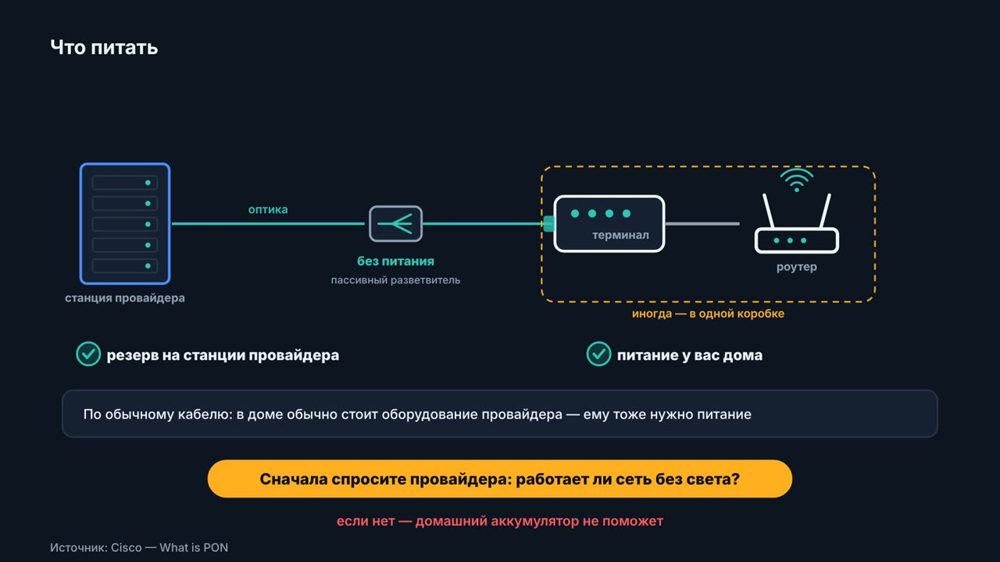

Резервне живлення роутера: інтернет без світла
Роутеру й терміналу провайдера потрібно всього кілька ват, тому інтернет можна тримати годинами від невеликого акумулятора. Розбираємо, що саме живити, скільки ват бере ваш інтернет, яке джерело обрати і як порахувати години.
Ролик російською, 6:01. Не відкривається? Дивитися на YouTube або читайте розбір нижче — у ньому все те саме.
Впишіть вати своїх пристроїв і ємність джерела — калькулятор порахує години роботи й скільки Вт·год потрібно на ваше відключення.
Відкрити калькуляторЩо живити
Зазвичай інтернет у квартирі — це два пристрої: термінал провайдера й роутер; іноді вони в одній коробці. В оптичній мережі між станцією провайдера та вашим терміналом стоять лише пасивні розгалужувачі без живлення, тому для інтернету без світла потрібне живлення у вас удома й резервне живлення на станції провайдера. Якщо інтернет надходить звичайним кабелем, у будинку зазвичай стоїть обладнання провайдера, і йому теж потрібне живлення. Тому насамперед запитайте провайдера, чи працює його мережа при відключенні.

1Скільки ват
Подивіться на наліпку блока живлення: у TP-Link Archer AX1800 — 12 В, 1 А, тобто до 12 Вт. Це максимум блока, а не споживання. Напруга буває різною: у європейської версії Archer A64 блок на 9 В. У терміналів виробник іноді пише два числа: у Huawei EchoLife EG8145V5 (термінал із вбудованим Wi-Fi) статична потужність 5 Вт, максимальна 12 Вт; реальне споживання — між ними. Найточніше — виміряти ватметром, як у випуску 3.

Чим живити: три способи
Міні-ДБЖ на 12 В
Вмикається між блоком живлення та роутером і віддає постійну напругу — без 230 В на виході. Наприклад, APC Back-UPS Connect CP12036LI: вхід і вихід 12 В, до 36 Вт, літій-іонний акумулятор на 27,75 Вт·год, три змінні штекери (2,5 · 2,1 · 1,7 мм); виробник пише «до 4 годин для середнього роутера». Звірте напругу з наліпкою блока живлення, потужність — із запасом, штекер — із гніздом, і чи вистачить виходів на всі пристрої.

Power bank
Підійде не будь-який: у правилах USB Power Delivery обов'язкові напруги — 5, 9, 15 і 20 В, 12 В у цьому списку немає. Кабель-перехідник на 12 В запрацює, тільки якщо павербанк уміє видавати 12 В — шукайте це в характеристиках. Ємність дивіться у ват-годинах; якщо вказано тільки мА·год — поділіть на 1000 і помножте на напругу поруч: 20 000 мА·год × 3,7 В = 74 Вт·год.
Звичайне ДБЖ або зарядна станція
Працюватиме, але марнотратно: постійна напруга перетворюється на 230 В, а блок живлення роутера знову робить із них 12 В, і на кожному кроці частина енергії йде в тепло. Плюс інвертор на холостому ходу сам бере близько 8 Вт (випуск 1) — більше, ніж термінал на 5 Вт. Станція вже є — увімкніть роутер у неї; лише заради інтернету краще міні-ДБЖ на 12 В.
2Скільки годин
Коефіцієнт 0,8 — з паспорта того самого APC: «45 хвилин при 80 % навантаження». Це 28,8 Вт × 0,75 год ≈ 21,6 Вт·год із 27,75 Вт·год, близько 78 %. Для павербанка беремо той самий запас. Приклад: термінал із вбудованим Wi-Fi на 5 Вт — міні-ДБЖ на 27,75 Вт·год протримає близько 4,4 год, павербанк на 74 Вт·год — близько 12 год.

П'ять помилок
- Живити тільки роутер, забувши про термінал — Wi-Fi буде, інтернету немає.
- 12 В на роутер, якому потрібно 9 В. Живіть кожен пристрій напругою з його блока живлення.
- Павербанк і кабель на 12 В, а павербанк 12 В не видає.
- Один роутер на великому ДБЖ — помітна частина заряду піде на втрати.
- Не запитати провайдера — якщо його мережа без світла не працює, акумулятор живитиме роутер без інтернету.
Джерела
- Cisco — What Is Passive Optical Networking: розгалужувачі без живлення.
- TP-Link Archer AX1800 (EU) — даташит: 12 V/1A.
- TP-Link Archer A64 — даташит: EU-версія 9 V/0.85 A.
- Huawei EchoLife EG8145V5: 12 В, 1,5 А; 5 Вт статична, 12 Вт максимальна.
- APC Back-UPS Connect CP12036LI: 12 В, 36 Вт, 27,75 Вт·год, 45 хв при 80 % навантаження, до 4 год для середнього роутера.
- Texas Instruments — USB Power Delivery (SLVA782): 5, 9, 15 і 20 В.
- FAA — розрахунок ват-годин.
Перевірено 15 листопада 2026 р. Знайшли помилку — напишіть у коментарях під роликом.